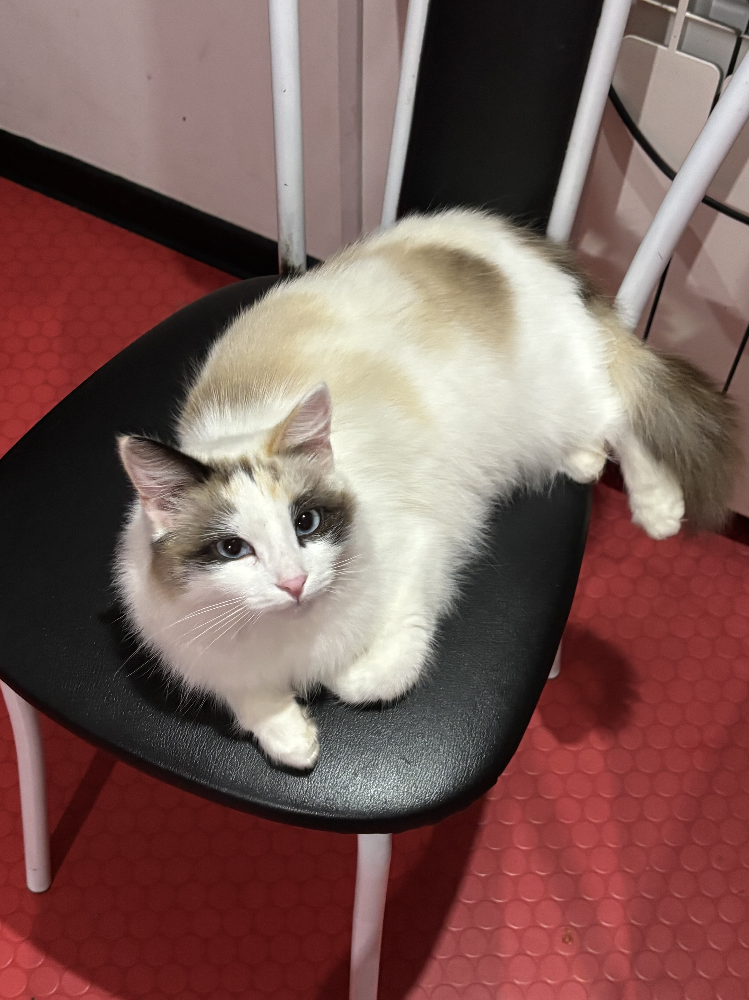

Добро пожаловать!
Кошки — домашние животные, которые сопровождают человека на протяжении многих веков. Они отличаются характером, внешностью и поведением.

Что вы найдёте на сайте?
- Информацию о породах кошек
- Советы по уходу
- Пример интернет-магазина
- Форму обратной связи